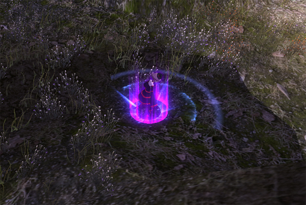
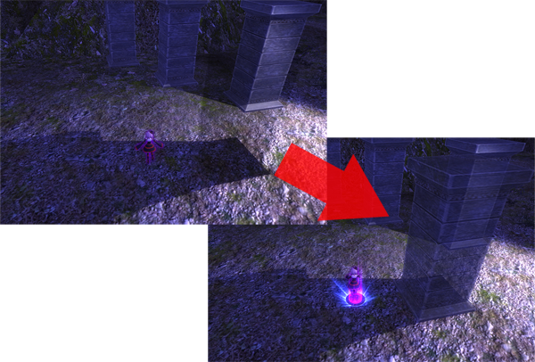
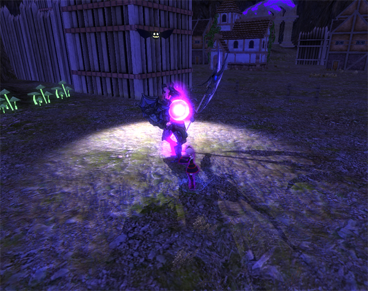
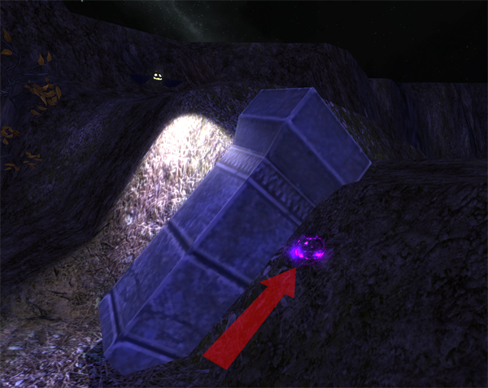
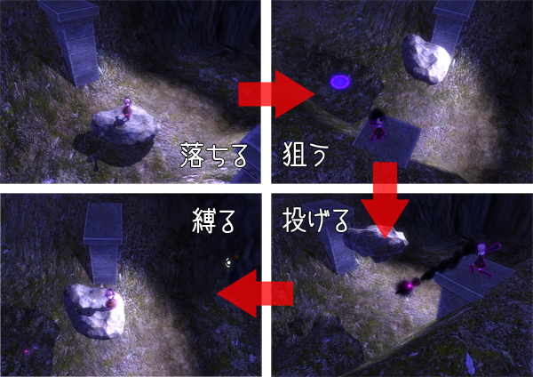

何でもアリの新感覚「影踏みアクション」！
魔界
それはあらゆる魔が跋扈する世界
かつて世界は「影」によって支配されていた
「影」は魔のモノを狂わせ混沌が世を支配した
あるとき現れた偉大な魔女によって「影」は封じられ
世界には平穏が訪れた
そんな話も今は昔
幾百幾千の時を経て
語り継ぐ者もほとんどいなくなっていた
そして再び
「影」は静かに動き出そうとしていた
かつて世界を支配したと言われる謎の存在。
影鬼を封印したとされる魔女の末裔の一族。
代々影鬼の封印を守っているが、そのことは族長と守役のみに口伝されている。
一族は影の魔法を行使できる代償として「太陽光」や「強い光」を浴びると極端に体力を消耗してしまう呪いを受けている。
シャッテ
影守の一族の魔女。
次世代の守役として選ばれるも断ったため謹慎処分を受けた問題児。
魔法の才能はあるがあまり考えずに突っ走るため失敗も多い。
ランタ
影守の一族に代々仕えているランタン蝙蝠の一匹。
眼や口から光を出して影を作り、影の魔法の発動をサポートする。
シャッテよりもかなり歳上であるため数年前から問題児の教育係としてパートナーになっている。
影踏み : Stamp or [z] key (Default)
通常
動体、生物の影を縫いとめて対象を一定時間停止させる。
朧影（オボロカゲ）を踏むことで実体化させる。
影に取り憑いている魂を祓う。



長押し
影に入り込み移動する。敵に気づかれ難くなったり、通常では登れないような傾斜などを登ることができるようになる。
生物の影に入り込み対象を操る。


影縫い（遠） : Bind or [x] key (Default)
影クナイの投擲により影を縫いとめ対象を一定時間停止させる。ボタン押し込み中に狙いを定めることもできる。

跳躍 : Jump or [space] key (Default)
一定の高さまで跳び上がる。着地時に影踏み（通常）判定がある。

影法師 : Avatar or [v] key (Default)
まだ秘密。ストーリー展開に応じて解放されます。体験版では使用できません。
追従/停止 : Lock or [a] key (Default)
ランタのプレイヤー追従/停止を切り替える。
近くの物体に光が当たる最適な位置まで移動して停止。
方向転換 : Reverse or [s] key (Default)
ランタの光の向きを前後で切り替える。
カメラ回転 : 右アナログスティック
カメラの向きを自由に変更する。
カメラリセット : LookForward or [f] key (Default)
カメラをプレイヤーの前方に向ける。